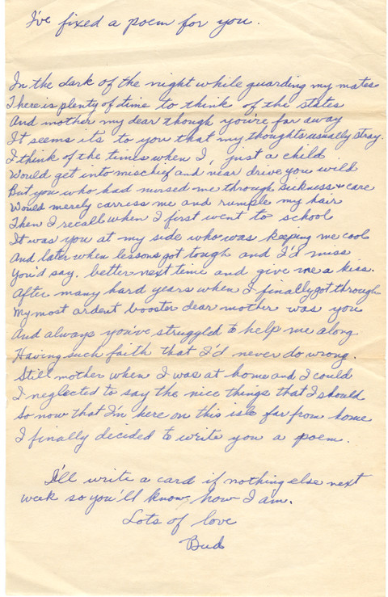

Poetry of a Soldier
The Chapters of Our Lives
By Jack Young
Poems by Fred Young
-- Copyright --
Copyright 2013 Jack Young - All Rights Reserved
Published by Jack Young at Smashwords
This book contains material protected under International and Federal Copyright Laws and Treaties. Any unauthorized reprint or use of this material is prohibited. No part of this book may be reproduced or transmitted in any form or by any means, electronic or mechanical, including photocopying, recording, or by any information storage and retrieval system without express written permission from the author / publisher.
Smashwords Edition, License Notes
This ebook is licensed for your personal enjoyment only. This ebook may not be
re-sold or given away to other people. If you would like to share this book
with another person, please purchase an additional copy for each recipient. If
you’re reading this book and did not purchase it, or it was not purchased for
your use only, then please return to your favorite ebook retailer and purchase
your own copy. Thank you for respecting the hard work of this author.
-- Dedication --
This book of poems is dedicated to my dad.
He was a simple, humble, honest man
who taught me love of family
and love of life.
-- Table of Contents --
A normal kind of guy...
Everybody’s life is a story. Each of those stories is comprised of many chapters. Some chapters, or even in some cases the whole story, are easier to read than others. Sometimes though, a single chapter out of that person's life can be quite unique, or a real mystery. Fredrick Hugh Young was one of those people who had one of those unique chapters in his life; one of those chapters that just didn’t seem to fit in with the rest of his life. It's not that having one of those chapters is bad, especially if we can learn from them and become a better person as a result. That certainly holds true for Fred’s life.
It is easy to wonder what makes a person who they are. Why am I like me and why are you like you? Which of life’s experiences have combined to make us who we are? Is there a cumulative effect? Does a single experience help build and shape us for the next experience? What can we do with our experiences to change who we are, and to better ourselves in this life?
In this book, we’ll examine what made Fred the man he was. What experiences helped form his life? Why was he thoughtful and kind, always so quick with a ready smile? Why did he seem so content, so calm, so at peace? Why was he so well liked by so many?
To answer some of those questions, we have to first know a little bit about Fred. He was born in 1909. As a young boy he experienced the early cars being introduced to the world. But, for many of those years, his father continued using horses and wagons to haul building materials and scaffolding. His aunts and uncles had farms and raised animals. His younger brother Lloyd died of influenza during the Spanish Flu epidemic when Fred was ten years old. When he was eleven or twelve his family moved to California, where he enjoyed the freedoms of a young teenager spending many long hours playing with his friends. He was a bit shy and was held back a year while in high school because he couldn’t pass his public speaking class.
Fred began work in the building trades industry and at one point became a salesman for a building supply company traveling throughout Southern California. Most of his life he worked as a plasterer.
When Fred was forty-nine, with a family of five children, he bought a house in a neighborhood of tract homes in the little Southern California town of La Habra. There was an empty lot between his house and the main street in town. Prime commercial property, it belonged to the man who owned the Ford dealership. Each summer the man who owned the lot would have the weeds plowed under. Numerous times while Fred lived in that house something would come up regarding the land being sold and a business coming in and building something right next to Fred's house. At one time there was talk of a liquor store, at another of a car wash. Many of the neighbors were opposed to whatever development was being proposed and they went to the city council to voice their protest. They often wanted Fred to go because he stood to lose the most, and he would be impacted more than anyone else. Fred never went to the meetings. Maybe it was because he had flunked his public speaking class while in high school. It may have been because, as he would tell the neighbors, “It’s their property. They can do with it what they want. If they are interested in knowing what I think about it, they can come talk to me.”
The property was never sold or developed during his lifetime - nor was it sold or developed during the six years following his death. But within a few short years of his wife Lillian’s death, it was sold and developed, four tall condominiums blocking the beautiful view Fred and Lil had enjoyed of the hills near their home for over forty years.
What made Fred who, and what, he was? And why was he like that?
Fred’s parents weren’t very good at handling money and his father struggled keeping the business afloat. During the thirties Fred borrowed money to build a house for his parents and sisters to live in. Fred figured that if he were responsible for making the payments, at least he would always have a roof over his head. His parents lived there until after Fred came home from the war and got married.
In one of his letters to his sister during the war he wrote…
----------
Dec 3, 1944
Dear Doris,
Your trip to the races sure sounded like a lot of fun. Did you dig into the grocery money like mom did? Maybe that’s why mom is sticking on her diet so well. If she loses some of her grocery money on some nag she cuts down on her food till she gets even again. Watch her gain weight when she has a good day and wins a pile. - I’ll send a short letter soon so hang on awhile.
Love Bud
----------
Perhaps this explains why Fred set financial goals throughout his life. They might not have been lofty goals compared to today’s standards, but they seemed to be fiscally sound. Fred saved money. Fred bought some bonds. Fred bought some stocks. Fred lived within his means. He always paid cash for all but his first car, a 1936 Chevy Coupe. After paying off the loan he vowed he would never buy a car on credit again, and he didn't. Fred had enough money to take care of himself and his wife until their death.
When he was thirty-three, a major shift occurred in Fred's life. He was drafted into the Army and stationed in Hawaii. For the first time in his life, he began writing poetry. He never wrote poetry before his military service or after. But during this intriguing period of his life, he expressed himself in ways that were both meaningful and beautiful. It is this chapter of Fred's life that we'll now explore.
Hopefully, this chapter of his life will give us some insights for our own lives. Hopefully we can learn from his chapter and we can forge ahead and write our own new chapters. Hopefully, as a normal kind of guy or gal in our own right, as individuals we can become better, kinder, and more complete.
Making the most out of a bad situation...
After World War II began, men between the ages of 18 and 45 were liable for military service. Fred wasn’t married at the time, nor did he work in a civil defense related industry, so he became a prime candidate for the draft. He wasn’t happy about being drafted and expressed those feelings in his poem “Greetings from your President.”
----------
“Greetings” from your President
The letter that came in the mail,
It seemed to say, "Come on to jail".
The words that seemed my soul to rent
Were "'Greetings' from your President".
That note had come from my draft board,
And it contained no welcome word.
My life would be my own no more.
I thought of that, and then I swore.
But off to war I sadly went
After the little I'd saved was spent.
First I went to a camp for training.
Things were bad, but I'm not complaining.
Still, it's a fact the system was bad,
Or maybe the fault was the non-coms we had.
Yes, non-coms back there who hadn't seen action
Were trying to teach us the proper reaction.
The teachers we had were as dumb as could be.
Here we've learned more, but we're now oversea.
Out on the front one little mistake
Can bring on the end without a retake.
The things we learn should be just right
If men must save their lives to fight,
And what non-com at home can tell
Exactly how to keep from Hell.
The best way is to watch the foe
And learn from fighting toe to toe.
Fred Young
----------
During his first few months in the service Fred kept a journal of sorts. He wrote on small scrapes of paper, in very, very small writing, some of his thoughts about the army. He didn’t want anyone to see them for fear of what might happen to him, so he kept them hidden. He kept them throughout his entire military service, and even up until near his death. Here are a few of the things he wrote.
----------
“Induction. - The hell begins. - Fellows quite drunk when arriving at Ft. McArthur.”
“Clothing - nothing fits. - Physical inspections - Mech aptitude tests line up for everything - First taste of no privacy, no friends, just a bunch of fellows all wondering what next? - Non coms yelling.”
“Some non coms have pretty bad records in civilian life.”
----------
How do we react when things aren't going exactly as we want them to go? Do we gripe and complain? Do we call foul? Or do we quietly move forward, doing the best we can with the situation at hand?
Jenkin Lloyd Jones once said, “Anyone who imagines that bliss is normal is going to waste a lot of time running around shouting that he has been robbed. The fact is that most putts don’t drop, most beef is tough, most children grow up to be just like people, most successful marriages require a high degree of mutual toleration, and most jobs are more often dull than otherwise. Life is just like an old time rail journey...delays, sidetracks, smoke, dust, cinders, and jolts, interspersed only occasionally by beautiful vistas and thrilling bursts of speed. The trick is to thank the Lord for letting you have the ride.”
Fred was in the Army. It wasn't what he wanted, and there would be some discouraging days ahead, but during this time he found a way to cope. That coping mechanism included poetry. He came out of that chapter of his life a better man.
What can we learn from Fred, and how can we come out of the chapters of our life better people? Can we make the most out of any and all bad situations that may come along? Can we forego the complaining and bellyaching? Can we stop crying “foul”? We will see that if we do we can begin to make the changes in our lives that will help us have a better life.
There's no place like home...

Even though Fred ended up a Staff Gunnery Sergeant it’s obvious from some of his writings and poems that he had other opportunities to learn new skills along the way. He learned how to be a shoeshine boy, a moving man, a bug exterminator, and a cook.
----------
“At Callan I learned how to shine shoes how to hate army life.”
“We are grouped as big gun crews, mach gun crews, communications etc. - I move 5 times first week. mosquitoes are hell especially when on guard duty K.P best job I have had.”
----------
I imagine it was during one of his turns on guard duty that he composed the poem “The Sentry.”
----------
The Sentry
'Neath the light of the moon, as I stand at this post,
I just think of my home and the folks I love most,
Then my thoughts swing to war and the world with its hate,
For I've heard a noise and I hope not too late.
Not too late, I find out, for the noise I heard
Was no Jap, was not mortal, not even a bird,
But the noise of mosquitoes that dive in the night
Droning in to deliver a hell of a bite.
One bite isn't bad for it's over right soon,
But it hurts when there's millions beneath that bright moon.
So I stand there and cuss and I rave and I rant,
And wish to go home but they say that I can't,
So I dream of that day when I'll sail far away
To that land I love best, that good U.S.A.
Fred Young
----------
We all end up at one time or another with jobs we may not like, and Fred was no exception. As a plasterer Fred found himself working precariously high on scaffolding perched above the rocky California coastal cliffs. He worked in cold and rainy weather. He drove well over an hour each way to and from work, sometimes through fog so thick he could cut it with a knife. But the only time he quit a job was when his boss was less than honest with him.
Fred was also a family man, as the poem indicates at the beginning (“I just think of my home and the folks I love most”) and again somewhat at the end (“And wish to go home”). Fred stayed very close and connected to his immediate family as well as his extended family throughout his entire life. He made long trips across the country to visit aunts, uncles and cousins. It wasn’t unusual for his Saturdays to include a drive out to see family. I doubt that a week ever went by when he didn’t call at least one of his sisters or his mother. He expressed concern over his phone bill, but that was an expense he wasn’t ready to do away with. Family, and the connection with them, was very important to Fred.
Do we stay close to our families? Do we work out any issues we may have and build strong and lasting relationships? We should. There's no place like home.
If you teach a man to fish...
When Fred became a Boy Scout Assistant Scoutmaster in the early 1960s, he told the troop leadership that if he was going to serve he wanted to only be an assistant scoutmaster who taught the new scouts the basic scouting skills. He had been a Boy Scout as a young boy in California. The troop would sometimes take the street car to the end of the line and then hike to their camping spot. He enjoyed camping. As a Boy Scout he never advanced past the rank of Tenderfoot. Maybe as a result he felt he could only teach the new scouts. His request to teach no more than what he knew may have had its roots with his experiences in the army.
Fred didn’t think very highly of the training he received before going to the Pacific Islands during the war. Once there, his training continued and in time he submitted this poem for publication.
----------
A G I Trains for the Jungle
A Poem
By Sgt. Fred Young
We went to the jungle for training
Because of the order we got;
While there it rained and got muddy,
'Twas seldom we found it too hot.
We learned about crossing a river
By using a tent for a float;
We found we could get a gun over
Without any aid of a boat.
They taught us to kill with a stick or knife
By jabbing a man through the gut,
How to cripple or maim or to crush
With the blow of a mere rifle butt.
There are times you can live in a jungle
With scarcely a thing in your kit,
For the Pandanus tree or the coconut fruit
Can sustain you your life for a bit.
Then also we learned about blasting,
Explosives, and booby traps too.
It seems that the thing most important
Is care that it doesn't get you.
We crawled through water and mud and slime,
'Neath wire stretched taut overhead;
The hot lead screeched as it rocketed by,
And I thought of home and a bed.
Yes, those are some of the things we learned,
And I hope we learned them well,
For there may be a time at a later date
When they'll keep us away from Hell.
The week slowly reached it ultimate end;
Now we're back in our little nest;
And I hope we're here till the end of the war,
'Cause I don't want the final test.
----------
Fred was a very good scout leader - he always seemed prepared. He could start a fire with flint and steel, a bow and a stick, or with the batteries from his flashlight. He never complained on long hikes and he was always happy to sleep out under the stars. He was patient and kind to the new scouts, and always willing to do his part to help. Fred learned the Boy Scout Oath, Slogan, Motto and Law, and he lived by them.
Fred determined that his teaching and training skills would be much different than what he had experienced while in the Army. He determined to never be like them, but rather to be better.
How calm and collected are you when you are trying to teach someone a new skill? How willing are you to slow down and make sure they learn upon a firm foundation? Are you willing to teach a man how to fish, rather than just doing it for him because it is easier, thus insuring that man a lifetime of fish for himself and his family? We have so many opportunities to teach others, whether it is our own children or coworkers. However it might be, let’s teach them to fish.
Choose ye this day whom ye will serve...
Fred's notes help give us insight into his life while in the Army.
----------
Guard duty dark as heck on cloudy nights like inside of a goat. Cloud formations beautiful that's the best part about Hawaii. Bldg barbed wire entanglements thru cactus patch find hard spot to cut thru - miss getting no mail. Finally go to church in camp near mess hall. Bld showers etc. John Hordkott's radio surely sounds keen.
June 9 go to Honolulu practically all people dark. Fellows go mainly for women & drink: Line up for women. Go to Waikiki small beach. Water fine.
10th main thing make dust so we look like we're working corporals orders.
11th Take out guns going to move.
12th Ft Weaver best yet - meet Robt have talk
13th
14th Preacher says what seems trying and misserable now will be a joke when we get out says we are getting some good out of this and will better prepared for what we are destined to be when we get out.
----------
Outwardly Fred wasn't a religious man. While he sometimes went to church as a young boy, it was mostly a social event. After he moved with his family to California he only attended church when visiting his cousins.
When Fred's son became interested in religion and wanted to join a church Fred said, “I know a lot of good Catholics, a lot of good Lutherans, a lot of good Presbyterians, and a lot of good Mormons. I know a lot of bad ones of each of them as well, whatever you decide to do, be a good one.”
Fred decided to not be of any religion, but somewhere along the way he decided to be good. That decision may have solidified while in the Army. He was always kind, and tried to never speak ill of others. That’s not to say he never called anyone a crook or a crumb, but if he said it they were probably more than deserving of the title, and he never said it with malice or hatred.
Was Fred’s religious belief formed as a little boy? Did it develop during his summer visits with his cousins? Or, was there something about his stint in the Army that formulated his thinking that led him through the rest of his life?
The following two poems, neither titled, reveal a part of Fred that may have helped form the base of his beliefs. They reveal deep introspection on his part.
----------
The sound that I heard was a plane overhead.
The motors, they sputtered, and then they were dead.
The plane came to earth in a long gliding dive,
And the men who were in it are no more alive.
As the plane hit the earth with a sickening crash,
There was smoke and then fire, then nothing but ash.
Those men, they died there, in that bright flaming pyre,
And are now with their Maker, home to retire.
Fred Young
----------
----------
This Sunday I went to church near our camp.
I went to the front and I climbed up the ramp.
I found me a seat way up close to the stand
So I'd be near the Chaplin and also his band.
The Chaplin I like, for he talks mighty well,
And he has many tales which he likes to tell.
He told of a road which was narrow and thin,
And was harder to follow than the path of sin.
He said that sin's way is so easy to find
Because it's unfixed like a roving mind.
Its branches are many, so some follow it
To discover at last they've improved not a bit.
But the path of the righteous so narrow and thin,
Some follow and fight till they're nearly done in,
But the end of it leads to the Holy Grail,
So they can be proud if they stick to that trail.
In the end, I'm sure that the trail which is right
Is the trail which is thin. Yes, the trail that's a fight.
And that is the trail I'm convinced is the best
Because it's the trail which leads over the crest.
I went back to camp and I sat down to think,
“Does the trail I am on lead over the brink?”
And I made up my mind to get onto a trail
Which I feel on the end will lead to the Grail.
Fred Young
----------
Fred never joined a church during his lifetime, but he was a better man than most of us will ever be. He always treated people kindly, and he tried not to be judgmental. What was his thought process? How can we make up our minds to choose goodness, and rightness? In my mind Fred is truly one of the noble and great ones of the earth. Can we also be noble and great, too?
God is no respecter of persons...
Throughout Fred’s life he tried to not be a respecter of person. He treated each person based on who they were, not what they were. It didn’t matter whether you were a successful businessman or a struggling plumber, Fred treated you well. But, if the plumber was honest and the businessman was a crumb, Fred’s respect for the plumber was an hundred times greater.
Fred struggled with how the army was organized based on rank and not on what kind of person someone was. It bothered him. One of his relatives, a cousin, was an officer stationed in Hawaii. Fred visited him on a few occasions, but felt like his cousin brushed him off because Fred wasn’t an officer and didn’t want be seen with Fred. I imagine it was experiences like that, and other ones while in the Army, that prompted him to write about “Jimmy.”
----------
Jimmy and I were friends for a while
Till I got my stripe then he lost his smile.
As bucks we’d been the best of pals
Joshing and kidding about our gals.
Then I got a stripe and Jim wouldn’t talk
He’d just grunt and groan and me he’s balk.
I’d want him to come and visit a friend
But me he’d refuse and my heart he’d rend.
The reason for that was he had no stripe
So all he would do was sit and gripe.
His head was hung with grief and woe
And I seemed to be his deadly foe.
We’d talk of a trip to town we two
But now he says No! I’ll not go with you.
Your stripe makes you up one notch from me
So now I’ll not go anywhere with thee.
He goes to the store and leaves me behind
The fact that I’m lonesome he doesn’t mind.
Because now his mind is so full of hate
He no longer considers me as his mate.
I hope that some day he’ll be friendly some more
So I shall be welcome to come to his door.
I hope he’ll get stripes all over his sleeves
And completely get over the most of his peeves.
----------
How are we when it comes to our treatment of others? Do we think we are “better” than they are? Or maybe do we think we are “not good enough”?
We are all children of our Father in Heaven, regardless of the color of our skin, or the years of education we have, or a host of other things that may make us different. But what kind of person are we? It really doesn't matter “what kind of person” the next person is. We should still treat them with respect.
Bound, bound, bound and rebound...
Fred never really got down in the dumps. Nothing seemed to faze him. He was a very steady man. He must have had his down days, but he never seemed to show it.
----------
After a few fairly pleasant days at Weaver all is changed again - New gun commanders - learn things anew from guys who have to hold the book in one hand and read the answers while they point out part with other hand - Can men learn how and have confidence under such methods of instruction. The New York guys are over us now the guys wid de brogue. There are several corporal & P.F.C. positions open but hell, I believe I'd sooner be a happy Buck Private maybe this is just my day for feeling blue-er. Fired our first shots with 3" guns. I was relayer. Like this camp fine. Find that these officers & non coms are best we have had.
Still think of the little blonde but haven't heard from her for so long that I don't believe she thinks of me. Sometimes think, hell, I've got to start everything over again when I get home I guess there's no use, breaking my heart over a blonde. Just a little discouraged today.
----------
All of us can have some down days every once in a while. Things can happen differently than we would expect or hope them to.
In the next untitled poem, Fred expresses his low as well as the high. He also expresses that which matters most to him, his family.

----------
Your letter arrived when my spirits were low.
The next thing I knew they were high and aglow.
Yes, my spirits had changed from way below par
To the way they are now. Right up close to a star.
The news of your note was cheerful and gay
And reminded of things that we'd done in our day.
It told of some night spots we'd done in the past
The memories of which I shall keep till the last.
Still what I like best, is not what you relate
But the fact that you write and I still seem to rate.
It's pleasant to feel that there's someone back there,
With my welfare at heart and who still seems to care.
----------
Fred had three sisters: Margaret, Doris, and Catherine. He didn't like one any better than another and he was always very kind to all three. He would phone them all regularly, and whenever he made a trip into town to visit one of them he would always visit the other ones as well. There seemed to be tremendous love in Fred’s family. Even after Fred died, six years later when his wife Lillian was just days away from her own death, Fred’s two remaining sisters, both in their eighties, came to be with Lil. They really did care.
How do we respond to our challenges, to our moments of feeling down? Do we let them drag us further downward? Or, do we look on the bright side? Do we pick ourselves back up? Do we bound, bound, bound and rebound?

----------
Dear Doris,
I get out my paper and pick up my
pen
I just start to write, and what happens then
I examine my pen Yes, I’m all out of ink
So I put back my paper and sit down to think
Well the letter I planned it wouldn’t be much good,
And the news which I had could be misunderstood
So I guess I had better just rest up or play
And I’ll sit down and write on some other day.
Some procrastination eh what? I just haven’t felt like writing lately and nearly always put off writing until tomorrow. I expect to get around to writing both mom and you soon but thought I’d send this note to let you know I’m feeling fit as a fiddle and haven’t forgotten you folks.
Thanx for the cookies. They arrived in fine shape. I received both boxes. Tell mom I got her letter today saying she had sent a package but I haven’t received the package yet.
Lots of love and I’ll write soon.
Your
Bud
----------
Although Fred says he's “feeling fit as a fiddle and haven't forgotten the folks back home,” the most telling line in his letter is the one that says, “I just haven’t felt like writing lately…” Fred was lonely and feeling a little down, and he missed his family.
Do we care? Do we call? Are we concerned? It really doesn't take much effort on our part, as long as we are sincere, to make a real difference in the life of another person. But, we do have to do something. It could be something as simple as a note, a phone call, or an email. Some small act of kindness can go a long way in helping to make another person's day better, to help them rebound, to help them feel “right up close to a star.”
Mother dear I love you so...
Fred’s mother passed away in February of 1973. She was eighty-six years old. Fred was sixty-four years old at the time. At the funeral Fred wasn't ashamed of his heaving sobs and outright cries of anguish. Fred loved his mother.
Approximately thirty years earlier, at the age of thirty-four, Fred wrote his mother a poem while away from home serving in the Army.

----------
I've fixed a poem for you.
In the dark of the night while guarding my mates
There is plenty of time to think of the states
And mother my dear though you’re far away
It seems it’s to you that my thoughts usually stray.
I think of the times when I, just a child
Would get into mischief and near drive you wild
But you who had nursed me through sickness & care
Would merely carress me and rumple my hair
Then I recall when I first went to school
It was you at my side who was keeping me cool
And later when lessons got tough and I’d miss
You’d say, better next time and give me a kiss.
After many hard years when I finally got through
My most ardent booster dear mother was you
And always you’ve struggled to help me along
Having such faith that I’d never do wrong.
Still mother when I was at home and I could
I neglected to say the nice things that I should.
So now that I’m here on this isle far from home
I finally decided to write you a poem.
I'll write a card if
nothing else next week so you'll know how I am.
Lots of love
Bud
----------
Our mothers may not be perfect, but we are the ones who came without instruction manuals, and oftentimes while growing up, “colored outside the lines.” Our mothers deserve our unfailing love and faithfulness, our kindness, and our concern.
Fred would make the almost hour drive into town to help his mother around the house, or sometimes just to visit with her. He built hand-railing and sturdy steps so she could safely come and go as she needed. He repaired her fence. Fred welcomed her in to his own home to visit and sometimes stay for a week at a time.
We each need to re-examine our relationship with our mothers. We need to honor them and respect them. We need to make course corrections in our lives so as not to do anything that would bring dishonor to them. We need to truly love our mothers.
I have a family here on earth...
Fred’s sister Doris was one of his best friends. Throughout their entire lives they would call or visit one another quite frequently. Here is how Fred expressed his admiration for her.
----------
April 9, 1944
Dear Doris,
Here it is almost Easter –
I can picture you now in your gala array
As your heading for church on this bight Easter day
But the picture I’m getting from way over here
Is faded and dim. No it isn’t real clear
It seems I can see a new hat that’s quite funny
With a smile underneath that’s warm and real sunny
The dress you are wearing seems more like a suit
And it’s neat and well tailored and makes you look cute
Your shoes which are trim and tied with a bow
Are black and well shaped from the heel to the toe.
Now the outfit you’re wearing from bottom to top
It looks like it’s new – Yes its right from the shop
Still the clothes would be nothing if hung on some hooks
For it’s you that’s inside who enhances their looks.
Happy Easter
----------
Are we kind, considerate, and loving to our brothers and sisters? Are we forgiving? Are we thoughtful? What can we do better in our interactions with them? How can we build long lasting relationships filled with love?
We can express our love and admiration through our words and actions. A phone call, a quick note or email, or a visit to their home can speak volumes. They are family. Let’s enjoy the time we have together while here on earth.
So very much to learn, and to do…
Love…family…concern. Fairness…respect…gratitude. The list could go on. Fred Young was a good man, a very good man. Fred left the Army a better man than when he entered. And though he didn’t like that he was in the Army, he did his best while he was there, staying true to his beliefs, developing an even larger and stronger belief system, and receiving an honorable discharge at the end of the war as a staff gunnery sergeant.
His attitude and the way he dealt with each situation was a choice on his part to do what was good and right, and to be what was good and right. Each one of us is faced with situations every day in which we have to make choices, the same types of choices Fred had to make. If we choose to do good and to be good each and every day, we too will be remembered by our families and children and neighbors and friends just as people fondly and lovingly remember Fred.
Fred’s time in the Army and the poems he wrote are a chapter in his life that we really don’t know a lot about. He never did talk much about it. They were and still remain a mystery. But by reading his poems and trying to imagine what he was thinking and feeling we can construct a clearer picture of who Fred really was. It’s a picture of a man who was filled with goodness and love.
Do we love our mothers as deeply as he loved his? Are we teaching our children to have a deep and abiding love for their mothers? Do we love our brothers and sisters like he loved his? Is there more that we can do? Can we call them more often? Can we write them and tell them that we love them?
What about our belief in God? Is it firm? Is it true? Have we chosen our path? Is it the thin and narrow one? Is it the one that will lead to the Holy Grail?
How do we treat others? Are we a respecter of person, giving preference to the rich and the powerful, or do we respect people for who they are and treat them accordingly? Do we show the same love and concern for the rich neighbor as we do for the poor neighbor? Do we respect our co-workers like we respect our boss?
And following the principles Fred learned as a Boy Scout, and which he taught as a scout leader, and which he lived every day, are we trustworthy, loyal, helpful, friendly, courteous, kind, obedient, cheerful, thrifty, brave, clean, and reverent? If not, we should be.
We should each be asking ourselves these questions. Are we happy with our answers? What can we do to change? Is it time to start a new chapter in our own lives? Will the changes we make in our lives appear as mysterious to people sixty years from now as Fred’s poetry appears to us? Unless we try, unless we make an effort to be better, and to be good and to be kind, we will never know, and the chapters in our lives may never be worth reading - not now, not later.
What are we going to do about it? How are we going to change? To paraphrase a great religious leader, Spencer W. Kimball once said, “So much depends upon our willingness to make up our minds, collectively and individually, that our present levels of performance are not acceptable, either to ourselves or to the Lord. In saying that, I am not calling for flashy, temporary differences in our performance levels, but rather a quiet resolve to do a better job, to lengthen our stride.”
What kind of resolve will we make? Will it be a quiet but firm one? Will it stretch us and make us better? Will it be lasting? Will it be the one “which in the end will lead to the Grail?”
The war chapters…

Every person who fights for his or her country in war has a different experience than the next. The wars that are being fought now are producing different experiences for those involved than the experiences had by those who fought ten, twenty, forty, or even sixty years ago. The experiences are still defining. They are each individual's own chapter. They are important chapters, and as such, it is important that as those chapters are being written the author of those chapters make good choices so the final outcome of the story of their life will be one they can be proud of, and one that will be a blessing in the lives of their family, and to others.
I have three short stories I want to relate.
Story number one. While still in high school I visited a friend’s home and heard his older brother tell us about his first few days in Vietnam. My friend’s brother was big and strong and had been the captain of the high school football team just a few short months earlier. Now he was home on leave and telling us of the sheer terror he felt as he waded through rice paddies looking for the enemy. He told us of his first day on patrol and of how, as he and his buddy came through the tall grass at the edge of a rice paddy, his buddy was immediately gunned down. My friend’s brother recalled how he dropped to his knees and began firing his machine gun. He expressed the horror of how he couldn’t let up on the trigger and of how quickly his feelings changed to survival, and worst of all, how he just wanted to kill every person who might be an enemy.
How has that chapter in his life changed him? Did it help, or hurt him? What would something like that do to you? What can we do with tragedy so we become better rather than bitter?
Story number two. The year before I became eligible for the draft I had a friend who enlisted in the Army and went to Vietnam. He wrote to me a few times. His letters spoke mostly of how drugs helped him escape from the horrors of the war. I never heard from him again.
His story ended. We never know when our life's story will end. It could end tomorrow due to health issues or an accident, or it could end just due to old age. Are we striving every day to write chapters of our own life's story in such a way we will be proud to have others read them?
Story number three. The last story I include is about a man I knew named Mark Wood. The Japanese bombed Pearl Harbor just weeks before Mark turned eighteen. He knew then, that as soon as he could, he was going to enlist in the Army Air Corps, which he did immediately following his graduation from high school.
For about a year he was transferred around the United States learning how to fly different models of airplanes. He first learned to fly a small bi-wing plane followed by faster single-engine planes. Eventually he flew the big four-engine B-24 bomber.
Shortly after his training was complete he went to England and within a month was flying bombing missions over Europe. On his third mission, while on his way back over Holland, his squadron was hit by anti-aircraft fire. In the course of the attack, his plane was hit and badly damaged. With the two inboard engines knocked out, his plane began falling from the sky. With his plane dropping from 22,000 feet while over the North Sea on his flight back to England he offered a mighty prayer and made a pact with his Heavenly Father. He told God that if He would preserve his life during the war then he, Mark, would serve Him faithfully throughout the rest of his life.
At about 6,000 feet Mark was finally able to make the necessary adjustments (running the oil pressure higher than safe and keeping the engine rpm above the maximum allowed for the engine) to level out the plane and make it safely back to the air base in England. The airplane was so damaged it never flew again.
Mark tells of other times when shrapnel exploded down through the top of his cockpit, right in front of his face, bounced off the floorboard, and ricocheted underneath his seat. Had he been one-thousandth of a second faster he might not have been alive to tell about it.
Mark recounts of being one of eleven planes going out on a bombing mission and being the only plane to return.
Mark also recalls of hearing the news that the war was over. He said upon news of the announcement he immediately went outside to the top of one of the bomb shelters on base and made knee prints in the soft, damp soil as he knelt in prayer and expressed his true gratitude to his Father in Heaven for preserving his life.
On one occasion, after listening to Mark share some of his stories about his time in the army, someone asked him which of all the planes he had flown was his favorite. Was it the little maneuverable bi-wing or the fast single engine plane? Mark paused for a minute and then, with his voice cracking softly, said, “Well, I believe I’d have to say it was the B-24 that brought me back across the North Sea on only two engines.”
You see, the B-24 wasn’t designed to fly on only its two outboard engines.
Mark wrote a chapter of his life as he served in the Army Air Corps, and he faithfully and valiantly served his Father in Heaven to the end.
Not all of us can have chapters of our lives written while serving in the military during war, but each of us can be writing chapters in our life's story. I've written chapters as I left home and worked on a farm for room and board. I've written chapters as I left a job as a construction foreman because the general contractor asked me to lie to building inspectors. I've written chapters as I have made decisions of family over fortune.
I don't know what my life story will be when it is complete because I am still writing chapters. Each of us is still writing our own chapters. It doesn't matter which cards we are dealt, or what life may throw at us, it’s still our own responsibility to make good choices and decisions. It is still our responsibility to choose goodness over evil, to choose kindness over meanness, to choose selflessness over selfishness.
Hopefully we are all writing good chapters for our own life's stories. Let’s write the best book we can.
----- The End -----
-- Images --
Fred Young as a young boy in California. He is about 12 years old in this picture.
The USS Arizona burning after the Japanese attack on Pearl Harbor.
Frederick Winthrop Young with his wife, Anna Effie Pinnock Young.
A commendation awarded to Fred Young for outstanding service.
A picture Fred took of a Chinese grave while serving in Hawaii during World War II.
Fredrick Hugh Young’s service picture.
Fred Young and his three sisters. (From left to right: Catherine, Doris, Margaret, Fred).
Fred Young’s mother, Anna Effie Pinnock Young.
Fred’s sister Doris Young Brown with her husband Henry “Ted” Brown.
Fred in his barracks in Hawaii.
-- About the Author --
Jack Young is the fourth of Fred Young’s five children. Jack has written many of his own chapters in his life. Jack has worked on a farm, milked cows, and herded sheep. He has helped design, and build, one of the largest dairy barns in the world. He has worked numerous years in the computer industry designing very user-friendly interfaces for software packages and web pages and applications.
Jack and his wife Laura have seven children and eight grandchildren. Jack considers his family to be his greatest and grandest chapter in his life.
Keep an eye out for his next book, a children’s book titled “Andrew McGoo and His One Big Blue New Shoe.”